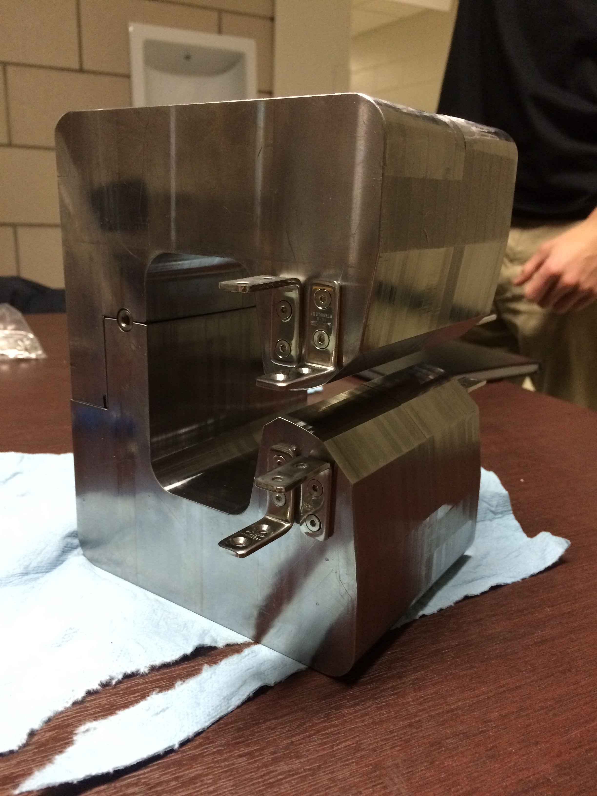
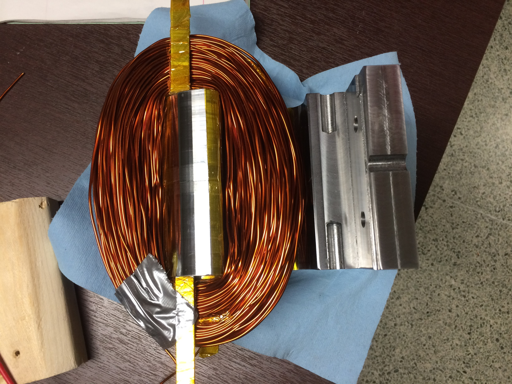
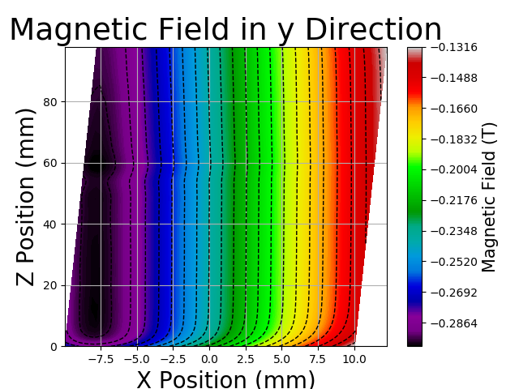
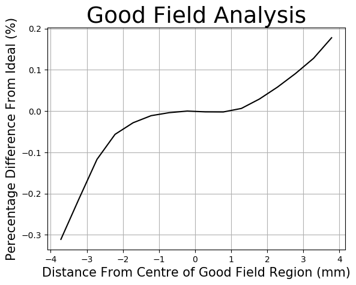

My undergrad engineering thesis consisted of a group project to design a prototype dipole magnet for a potential new Canadian Light Source 2.0. Information on the current Canadian Light Source can be found here. The dipole magent would be used within the electron storage ring of the new light source bendining the electron beam creating a large loop. This consisted of designing a dipole core structure and electrical windings to produce a specified magnetic field map. The dipole face was designed to produce a vertical magnetic field with a small gradient allowing a smaller magnetific field on the outter edge. This compensated for the different path the electrons took within the magent field depending on how far they were from the centre.
A small prototype magent was crafted in order to verify that the magnetic field created matched simulation work conducted on Finite Element Method Magnetics (FEMM). The prototype was scaled down to 50% for the length and width while the length was reduced to 10%. The magnets core was designed in SolidWorks using the shape developed from FEMM.

The prototype was machined from two solid blocks of low carbon steel creating only one connection. By using only two pieces this reduced slack casued through multiple connections allowing for improved alignment, plus a reduction in air gaps which would affect the magnetic field strength.
Due to the large size of the magnet a small defect from tool deflection formed on the dipole face. This affect is noticeable in the final magnetic field data across the horizontal plane, however, shows little affect to the overall vertical magnetic field.

Cooper wire was wrapped around the core’s dipole faces as shown below on the upper and lower sections. The top and bottom sections were connected in one single loop of wire to maintain a constant current between the two sections. A current of 5 Amps was then passed through the wires creating a magnetic flux within the core, and thus producing a magnetic field between the dipole faces.
The magnet field was measured and mapped across the horizontal plane between the two dipole faces. Due to a slight misalignment of the magnet and sensor a post data correction was needed to realign the data along the dipole face. With scaling the target of the prototype magnet was to achieve less than a 0.1% difference in measured magnetic field from the predefined magnetic field map over a 5-millimetre range. As shown in the last picture the magnetic field of the prototype magnet stayed within this desired limit and verified that our design produced the desired magnetic field strength and shape.
 